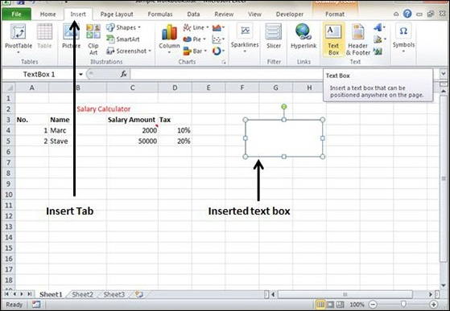
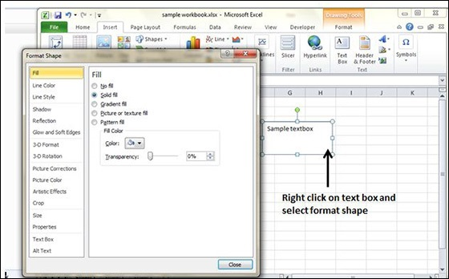

Text boxes are special graphic objects that combine the text with a rectangular graphic object. Text boxes and cell comments are similar in displaying the text in rectangular box. But text boxes are always visible, while cell comments become visible after selecting the cell.
To add a text box, perform the below actions.
Initially, the comment consists of Computer's user name. You have to modify it with text for the cell comment.

After you have added the text box, you can format it by changing the font, font size, font style, and alignment, etc. Let us see some of the important options of formatting a text box.
Fill − Specifies the filling of text box like No fill, solid fill. Also specifying the transparency of text box fill.
Line Colour − Specifies the line colour and transparency of the line.
Line Style − Specifies the line style and width.
Size − Specifies the size of the text box.
Properties − Specifies some properties of the text box.
Text Box − Specifies text box layout, Auto-fit option and internal margins.
